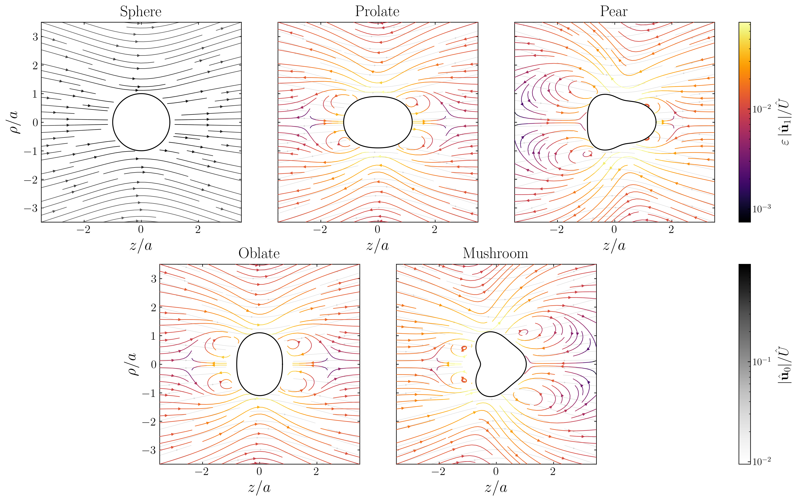

How Claude Helped Us Solve a Fluid Mechanics and Electrokinetics Problem
Ankur Gupta and Arkava Ganguly
TL;DR: We spent about 1.5 years on a problem in fluid mechanics and electrokinetics: how does the shape of a charged particle impact its motion in an electric field? After many unsuccessful attempts, a timely suggestion from Prof. Howard Stone pointed us to the right formulation, and Claude became a real collaborator from there. Across four sessions (three in chat and one in Claude Code) spanning about 5 weeks, it helped us work through the math, make all the figures, and draft much of the paper. It also made real mistakes that we had to catch along the way. This post walks through the physics, the long road to get here, and an honest account of how we actually used AI, including where it helped and where it slipped. The preprint is being submitted for peer review.
About Us
I am an Assistant Professor in the Department of Chemical and Biological Engineering at the University of Colorado Boulder. My research group, LIFE (Laboratory of Interfaces, Flow, and Electrokinetics), focuses on understanding how particles and ions move and self-organize for a broad range of applications. My group uses a range of mathematical techniques to solve problems.
My student, Arkava Ganguly (now a postdoc at NYU), and I have long been intrigued by how shape impacts particle motion, whether the particles are driven by external fields or generate fields themselves through the so-called self-propelling mechanism. One of Arkava's PhD papers, for instance, showed how self-propelling bent rods go around in circles. This post is about a new result on shape and particle motion, specifically a phenomenon called electrophoresis.
What Is Electrophoresis?
Imagine a tiny charged particle, say a protein, a nanoparticle, or a colloid, suspended in salty water. You switch on an electric field, and the particle starts to move. How fast it moves relative to the field strength defines a quantity called the mobility. One of my colleagues calls mobility the "bang for your buck": it tells us how much we can drive the motion of the particles.
Electrophoresis shows up everywhere: separating DNA and proteins in a gel, measuring the surface charge ("zeta potential") of nanoparticles, sorting cells in microfluidic devices, and characterizing colloids for drug delivery and environmental remediation.
A charged particle in an electrolyte. When an electric field is applied, the particle drifts while the surrounding ion cloud exerts a drag. Only nearby ions are shown for simplicity.
The mathematical description is elegant. The velocity $U$ of the particle is proportional to the applied field, and the constant of proportionality is the mobility:
$$U = M \times E_\infty.$$
In general, $M$ depends on the particle's surface charge, the properties of the surrounding fluid, and — in principle — the particle's shape and the thickness of the ion cloud around it.
The cleanest case to think about first is a sphere. For a sphere of radius $a$ with surface potential $\zeta$ (the so-called zeta potential) sitting in a fluid of permittivity $\varepsilon_f$ and viscosity $\mu$, the mobility is
where $f_H(\kappa a)$ is Henry's function, and $\kappa^{-1}$ is the Debye length — the thickness of the ion cloud around the particle. The combination $\kappa a$ is the particle size measured in units of that ion cloud thickness.
Henry's function smoothly connects two classical limits, both for a sphere. When the ion cloud is very thick compared to the particle ($\kappa a \to 0$, the "Hückel limit"), $f_H = 2/3$. When the ion cloud is very thin ($\kappa a \to \infty$, the "Smoluchowski limit"), $f_H = 1$. There was actually a real debate when these were first proposed: Hückel (1924) calculated a mobility only $2/3$ of Smoluchowski's value, and the two looked irreconcilable. Both were right, just in different limits, and Henry (1931) bridged them with the interpolation function $f_H(\kappa a)$.
The Smoluchowski Surprise: Shape Doesn't Matter?
Here is where it gets surprising. In the Smoluchowski limit ($\kappa a \to \infty$), the answer is $f_H = 1$ not just for a sphere, but for any shape: a sphere, a cube, a rod, a crumpled piece of paper all move at exactly the same speed as long as they carry the same zeta potential. The mobility is shape-independent.
In the Smoluchowski limit, particles of any shape move at the same speed, but only when the ion cloud is much thinner than the particle.
But this shape-independence only holds in that thin-cloud limit. For many real systems (nanoparticles, proteins, particles in low-salt solutions), the ion cloud can be comparable to the particle itself, and the Smoluchowski argument no longer applies. In that regime, shape should matter — and the question is how.
Our Question: What If Shape Does Matter?
How would shape matter in electrophoresis? To answer this, we had to relax the thin double-layer assumption, but most ways of calculating mobility rely on exactly that assumption. We leaned on a framework from our prior work (Ganguly, Roychowdhury & Gupta, 2024) that keeps the full ion cloud in the calculation and lets us sidestep this restriction.
We focused on slightly deformed spheres because they are analytically tractable. Picture a gentle deformation of a sphere: a football (stretched), an M&M (squashed), a pear, a mushroom. All of these live under the same mathematical construct. The particle surface is described by:
The shape is a sphere of radius $a$ plus a small deformation $\varepsilon f(\theta)$, where $P_n$ are Legendre polynomials, which are mathematical building blocks for describing shape variations. The coefficient $c_2$ controls elongation/flattening, $c_3$ controls pear-like asymmetry, and so on.
A sphere smoothly deforming through different shapes: prolate (football), oblate (M&M), and pear-shaped. The red arrow marks the applied electric field direction, and each shape is drawn with its symmetry axis aligned with it. Each shape is built from a different combination of Legendre modes.
One convention worth spelling out before we go further. Labels like prolate (football) and oblate (M&M) are defined relative to the applied electric field. A football is prolate only when its long axis is aligned with the field; an M&M is oblate when its short (symmetry) axis is aligned with the field. Rotate either by $90^\circ$ and you are describing a different physical problem altogether. Every animation below marks the field direction explicitly, and the particle's symmetry axis is always drawn aligned with it.
The Long Road to This Problem
Before we get to how Claude helped, it is worth being honest about how long this took. "How does shape change electrophoretic mobility" sounds simple, but getting to a formulation we could actually solve took roughly 1.5 years and several unsuccessful attempts. Here is the condensed version:
Fall 2024
Full spheroids, numerical attempt. We began with the full spheroids problem. Arkava and Zoe had already validated the mobility and disturbance coefficients, but the full Poisson-Nernst-Planck equations would not converge in our own solver.
Spring 2025
Transition to COMSOL. We started getting numerical solutions but struggled to benchmark them against prior literature. We eventually matched the classical result at zero eccentricity (a sphere), but the finite-eccentricity results were hard to trust.
Summer-Fall 2025
Axisymmetric spheroid, analytical. We simplified to an axisymmetric spheroidal problem we could attack analytically. This captured the Hückel limit for low but finite eccentricity, but a quantitative mismatch at the Smoluchowski limit still would not go away.
December 2025
Slightly curved surface. We pivoted to electrophoresis near a slightly curved surface, trying to capture the shape effect through a singular perturbation in $\kappa$. Promising, but still not the clean framing we needed.
February 2026
The right problem. Prof. Howard Stone suggested the canonical deformed-sphere formulation. This was the move that worked. The perturbation framework we had been working toward suddenly had clean boundary conditions, a well-defined small parameter, and a clear path to compute the correction order by order.
Spring 2026
Claude enters the picture. With the right formulation in hand, we used Claude (first chat, then Claude Code) to carry out the derivation, generate every figure, and help write the manuscript. This is where the project finally accelerated. Details below.
We share this timeline for two reasons. First, it is easy to read a preprint and assume the ideas arrived fully formed; they almost never do. Second, the AI only became genuinely useful once the problem was correctly posed. No amount of prompting was going to rescue us from an ill-posed formulation, and recognizing the right framing (with Prof. Stone's help) was not something we could outsource.
Why and How We Thought Claude Could Help
Our approach relies on a mathematical technique called perturbation theory: start from a known solution (a sphere) and compute corrections for small changes (the shape deformation). If we know exactly how a sphere behaves, can we figure out how a slightly squished sphere behaves by computing the corresponding correction? These calculations involve juggling many variables, length scales, and intermediate expressions. Keeping track of all of it is time-consuming and error-prone, and one sign error can invalidate the whole thing. This is where Claude can substantially speed this up, because it is very fast at keeping track of details, as long as the problem is formulated correctly. Of course, one still needs to check the work along the way (details below as to why).
We believe this problem is solvable, and we could likely have solved it without any assistance from Claude. However, it would have taken substantially longer, perhaps months or even a year of effort. In contrast, the core derivation with Claude's help took about 5 weeks from the correct formulation to a validated result.
We do want to emphasize that, often, the problem is not easily formulatable in the first place, as our own 1.5-year timeline shows. That is where Claude is unlikely to be of much help, at least as of now.
What We Found
Our main result is a compact formula for how shape modifies the mobility introduced earlier. For a slightly deformed sphere, the mobility along the field direction is:
The mobility of a deformed sphere is the sphere result $M_{\rm sphere} = (\varepsilon_f \zeta / \mu)\, f_H(\kappa a)$ multiplied by a small shape correction. The correction depends on the elongation along the field ($\varepsilon\, c_2$) and a new "shape correction factor" $\sigma_2(\kappa a)$ that we computed.
Three key findings emerged:
1. Shape correction is smooth and predictable.
The correction factor $\sigma_2$ starts at $+1/5$ when the ion cloud is thick (where the only effect of shape is to change the drag on the particle) and smoothly goes to zero when the cloud is thin (recovering Smoluchowski's shape-independence). It reaches a maximum of about $0.25$ near $\kappa a \approx 0.5$. The actual change in mobility is $\varepsilon c_2 \sigma_2(\kappa a)$, so the magnitude depends on how deformed the particle is, but the shape of the $\sigma_2$ curve is universal.
2. Only one kind of shape change matters: stretching or squashing along the field.
Think of a football (stretched along the field direction) versus an M&M (squashed along the field direction). That stretch-or-squash mode, called $P_2$ in the math, is the only shape change that affects the mobility at this order. Pear shapes, bumpy shapes, wavy shapes, all of them are electrophoretically silent: the electric field simply cannot "see" them. Technically, this is a consequence of angular selection rules: the dipolar electric field can only couple to the quadrupolar shape mode. The practical upshot is that a football and a pear with the same amount of elongation end up with identical mobilities, even though they look very different.
3. Our results match known exact solutions.
For the special case of spheroids (ellipsoids of revolution), exact solutions were computed by Yoon & Kim in 1989. Our perturbation theory agrees with their results quantitatively, including a subtle non-monotonic behavior for oblate particles.
Shape Your Own Particle
The red arrow on the left marks the applied field direction, and the particle is drawn with its symmetry axis along the field — so positive $c_2$ is a football pointing along the field, and negative $c_2$ is an M&M with its short axis along the field. Move the elongation slider and watch the mobility curve shift. Now try the other sliders. The curve doesn't budge. The electric field is blind to those shape details.
Checking Our Work
We validated our results against the exact spheroid solutions of Yoon & Kim (1989). A spheroid is a special case of our deformed-sphere framework: an ellipsoid of revolution maps onto a pure $P_2$ deformation. The comparison is shown below for the closest-to-spherical case they computed ($c/a = 0.8$).
Our perturbation theory (solid coloured lines) vs. the exact spheroid solutions of Yoon & Kim 1989 (open circles). Left: prolate (football). Right: oblate (M&M). The dashed grey line is the sphere result, $f_H(\kappa a)$ (Henry's function).
Electrophoretic Silencing
To drive the point home, consider four particles grouped into two pairs, each pair sharing the same elongation ($c_2$). Within each pair, the particles have different higher-order features ($c_3$), yet produce identical mobility curves.
Four particles, each drawn with its symmetry axis along the applied field (red arrow), grouped by their $c_2$ value. Despite looking very different, particles with the same elongation along the field have identical mobility curves. Higher-order shape details are "electrophoretically silent."
Electrophoretically silent does not mean physically invisible. While the mobility is identical within each pair, the surrounding fluid flow is not. The figure below shows the Stokes disturbance velocity field for a sphere and the same four shapes. Within each same-mobility pair, the streamline patterns differ visibly: the $P_3$ content of the pear and mushroom breaks the fore-aft symmetry, producing asymmetric recirculation that is absent in their pure-$P_2$ counterparts.

Stokes disturbance velocity fields in the meridional plane for a sphere and four deformed particles. For non-sphere shapes, grey streamlines show the base flow $\hat{\mathbf{u}}_0$ and coloured streamlines show the perturbation $\varepsilon\,\hat{\mathbf{u}}_1$ (inferno colourmap, logarithmic speed scale). Prolate and pear share $\varepsilon c_2 = +0.2$; oblate and mushroom share $\varepsilon c_2 = -0.2$. Despite identical mobilities within each pair, the flow fields differ due to the $P_3$ content.
Shape and Speed: An Interactive Comparison
In the Smoluchowski limit, all shapes move at the same speed. What happens as the ion cloud gets thicker? Drag the slider below and watch the shapes separate.
How Ion Cloud Thickness Changes Shape Effects
← thick cloudthin cloud →
At high $\kappa a$ (thin cloud), all shapes move together. Drag the slider to lower values (thicker cloud) and watch the prolate particle pull ahead while the oblate one falls behind. The shape amplitudes are fixed at illustrative values; the true mobility change scales as $\varepsilon c_2 \sigma_2(\kappa a)$, so the visual speed differences depend on that choice.
How We Used Claude (and What It Got Wrong)
Once the deformed-sphere formulation was in hand, the analytical work was grinding rather than creative: expand a small parameter, carry the algebra order by order, cross-check against limits. Exactly the kind of thing where AI might help. The collaboration unfolded over about a month across four sessions: three in Claude chat and a final one in Claude Code inside VSCode. In total, we issued roughly 128 substantive prompts and received around 882 assistant responses. Each session tried a different mathematical route, and the progression across them is really the story of converging on a workable formulation.
The four sessions
The flowchart below summarises each session's approach, what went wrong, and how we moved to the next. Representative prompts from each session are in the Appendix of the preprint.
1
Session 1 · Sonnet 4.6 extended (chat) · thin-EDL + shape perturbation
We tried a double asymptotic expansion: the thin-EDL (Stone & Samuel) limit plus a small-shape perturbation in $\varepsilon$. The model produced a factor of $-9/5$ for the $\kappa^{-1}$ correction but could not justify it. It turned out two individually $O(\kappa a)$ terms were supposed to cancel to leave an $O(1/\kappa a)$ residual, which is catastrophic under floating-point subtraction. Rather than confronting the cancellation, the model kept constructing post-hoc justifications for the $-9/5$. We had to ask "Couldn't resolve it?" and "Seems like you have given up?" before it acknowledged the dead end. Unlock: we dropped the thin-EDL assumption entirely in favor of a Debye–Hückel linearisation with a single perturbation in $\varepsilon$ valid for all $\kappa a$.
↓
2
Session 2 · Sonnet 4.6 extended (chat) · reframe via Ganguly, Roychowdhury & Gupta 2024
Clean restart. We framed the problem directly in terms of the reciprocal-theorem expression from our prior work (Ganguly, Roychowdhury & Gupta 2024, Eq. 2.11), and listed the four components that needed to be perturbed to $O(\varepsilon)$: $M_{UF}$, $D^T$, $b$, and the volume element $\mathrm{d}V$. In this session, we caught a misconception of our own: we had assumed the self-mobility $M_{UF}$ stays constant at $O(\varepsilon)$. Reading Brenner 1964 closely showed it does not, and that Brenner already provides the required shape correction to the Stokes drag. A case of the AI helping us debug our own assumption, not the other way around.
↓
3
Session 3 · Opus 4.6 (chat) · Brenner + Ganguly framework
We upgraded to Opus 4.6 and asked it to combine Brenner's deformed-sphere drag result with the Ganguly et al. framework. The setup was correct, but the large-$\kappa a$ behaviour did not recover the Smoluchowski limit. The model proposed an ad-hoc interpolation: multiply the result by a factor of $0.8$ so the limit works out. We rejected the patch ("So there is an artificial fix by adding a 0.8 value?") and insisted on the full calculation ("Please do the full calculation instead of an interpolated ad-hoc formula"). Progress stalled in chat, so we moved into Claude Code for finer control over files and iteration.
↓
4
Session 4 · Opus 4.6 in Claude Code (VSCode) · where it all came together
Working in a real repository, one file at a time, unlocked everything. The key fix was a sign/magnitude error in the Brenner drag coefficient: the code had $\alpha = -3/5$ on the right-hand side of Brenner's formula, but Brenner 1964 Eq. 1.7 gives $\alpha = -1/5$ (equivalently, $+1/5$ in the final mobility). We caught it by cross-reading Brenner and noticing that $+1/5$ is what matches the low-eccentricity limit of Yoon & Kim 1989. Once that was fixed, the full $\sigma_2(\kappa a)$ curve fell out, the limits recovered, and the Yoon & Kim benchmark agreed. This session also produced every figure and most of the manuscript text. Session 4 alone accounts for ~56 of the 128 prompts and 759 of the 882 responses (the latter inflated because Claude Code emits one message per tool call while editing files).
One failure mode is worth flagging separately, because it happened while drafting this blog post. When we first asked Claude to expand this section, it produced a polished four-bullet list of mistakes Claude had supposedly made. Only one (the Brenner coefficient) was real; the other three were fabricated. We caught it by asking:
"Where was 'Sign and factor of 2 .... error' and where was 'Silently dropping ....' in our conversations highlighted?"
Claude conceded it had made them up. The corrected version, drawn from the actual manuscript, is what you are reading below. The lesson: with math, a wrong factor shows up on the next plot; with writing, fabricated specifics can slip in unnoticed. Check everything.
The specific mistakes we had to catch
It helps to be specific, because the failure modes were instructive. All four come from the four sessions above:
The $-9/5$ phantom (Session 1). The model produced a factor of $-9/5$ from a catastrophic cancellation of two large $O(\kappa a)$ terms, then kept constructing plausible justifications for it rather than questioning the underlying expansion. Only when we refused to let the conversation move on ("Couldn't resolve it?") did it concede. The lesson: the model will confidently dig in on an incorrect solution — checking the work is crucial.
Reverting to Stone & Samuel (Session 1). After we explicitly told it to drop the thin-EDL assumption and re-derive for arbitrary $\kappa a$, the next iteration quietly reached back for the Stone & Samuel slip-velocity formula, which is only valid in the thin-EDL limit. We had to re-issue the correction: "The Stone & Samuel formula is only true for the large $\kappa a$ limit, and using it for all $\kappa a$ is futile."
The ad-hoc $0.8$ patch (Session 3). When the large-$\kappa a$ limit did not recover Smoluchowski, the model proposed a multiplicative fudge factor rather than surfacing the underlying inconsistency. This is probably the most subtle failure mode of the project, because the patched result would have looked perfectly correct in a plot. We caught it because the patch was suspicious on its face, and redirected Claude by insisting on a full calculation: "It would help if this is fixed fully. Please do the full calculation instead of an interpolated ad-hoc formula. I want to ensure that the Smoluchowski limit is fully satisfied." In general, checking intermediate results against known limits is how we caught most of these errors. The preprint includes representative prompts from each session that show this process in more detail.
Brenner drag coefficient sign error (Session 4). The Brenner drag correction for a $P_2$-deformed sphere was written with the wrong value: the code had $\alpha = -3/5$ on the right-hand side of Brenner's formula, but Brenner 1964 Eq. 1.7 gives $\alpha = -1/5$ (equivalently, $+1/5$ in the final mobility). The downstream algebra was self-consistent, so this would have been easy to miss. We caught it by cross-reading Brenner and noticing that $+1/5$ is what matches the low-eccentricity formula of Yoon & Kim 1989.
The common thread across all four is that the model tended to construct justifications for its own earlier answers rather than question them. Catching each error required a human willing to stop the forward motion, re-read a primary source, and localise the problem. In practice, we relied on multiple layers of consistency checks: symbolic verification of intermediate expressions, manual spot-checking of algebra, comparison against literature results (Brenner 1964, Yoon & Kim 1989), visual inspection of plots for expected limiting behaviour, and physical intuition about what the answer should look like. No single check was sufficient on its own. Claude was good at re-propagating a fix once we pointed at it. It was much less good at spotting the error on its own.
Beyond the derivation
Once the analytical result was nailed down in Session 4, Claude Code also generated every figure in the paper, drafted and iterated on manuscript sections, and built this interactive blog post. Each had the same character: fast first drafts that needed careful human editing, but a real speedup over starting from scratch. For the figures, we pointed Claude at the plotting style of an earlier paper (Ganguly, Roychowdhury & Gupta 2024) and asked it to match the aesthetics, which was much faster than writing plotting scripts from scratch. The preprint Appendix reproduces a representative set of prompts verbatim.
For a sense of scale: the blog post itself required roughly 74 human prompts and about 650 assistant responses across multiple editing sessions in Claude Code. (The high response-to-prompt ratio is because Claude Code emits one message per tool call — each file read, edit, or terminal command counts as a separate response.) Token counts were not available on our subscription plan.
Our Thoughts on AI and Research
When we first started using Claude, it simultaneously invoked the emotions powerful and scary. The reason is simple: it can solve complicated math problems at an unprecedented pace. As one of our colleagues put it, the distance between a well-formulated problem and its solution is a lot shorter now with tools like Claude. A shorter distance, however, should not come at the expense of rigorously checking the solution. This is the tension we keep coming back to — speed is disarming, and it is precisely when the answer arrives quickly that the temptation to trust it without verification is highest.
We also believe, especially in undergraduate and graduate training, that Claude should not be used to offload thinking. If students let the model do the work of setting up problems, tracking the algebra, and interpreting the results, they will eventually lose the ability to check its work — and without that check, the speed advantage turns into a liability. The right use is the one we tried to describe throughout this post: formulate the problem yourself, let Claude accelerate the mechanical parts, and treat every intermediate result as something that still needs to be verified against a primary source or an independent calculation.